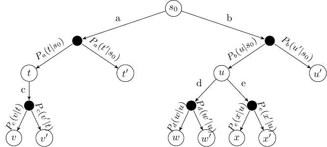
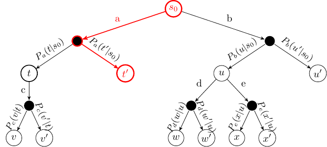
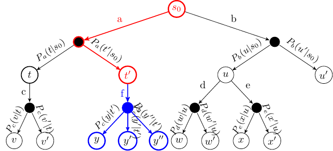
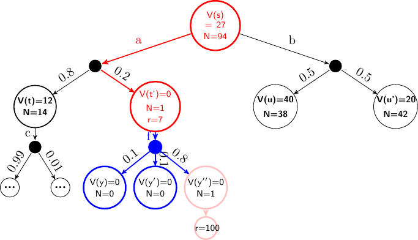

Monte-Carlo Tree Search¶
Learning Outcomes
Explaing the difference between offline and online planning for MDPs.
Apply MCTS solve small-scale MDP problems manually and program MCTS algorithms to solve medium-scale MDP problems automatically
Construct a policy from Q-functions resulting from MCTS algorithms
Integrate multi-armed bandit algorithms (including UCB) to MCTS algorithms
Compare and contrast MCTS to value/policy iteration
Discuss the strengths and weaknesses of the MCTS family of algorithms.
Offline Planning & Online Planning forMDPs¶
We saw value iteration in the previous section. This is an offline planning method because we solve the problem offline for all possible states, and then use the solution (a policy) online to act. These offline planning methods derive a policy \(\pi\) such that:
We can define policies that work from any state in a convenient manner.
Yet the state space \(S\) is usually far too big to determine \(V(s)\) or \(\pi\) exactly.
There are methods to approximate the MDP by reducing the dimensionality of \(S\), but we will not discuss these until later.
In online planning, planning is undertaken immediately before executing an action. Once an action (or perhaps a sequence of actions) is executed, we start planning again from the new state. As such, planning and execution are interleaved such that:
For each state \(s\) visited, many policies \(\pi\) are partially evaluated
The quality of each \(\pi\) is approximated by averaging the expected reward of trajectories over \(S\) obtained by repeated simulations of \(r(s,a,s')\).
The chosen policy \(\hat{\pi}\) is selected and the action \(\hat{\pi}(s)\) executed.
The question is: how to we do the repeated simuations? Monte Carlo methods are by far the most widely-used approach.
Overview¶
Monte Carlo Tree Search (MTCS) is a name for a set of algorithms all based around the same idea. Here, we will focus on using an algorithm for solving single-agent MDPs in a model-based manner. Later, we look at solving single-agent MDPs in a model-free manner and multi-agent MDPs using MCTS.
Monte Carlo is an area within Monaco (small principality on the French riviera), which is best known for its extravagent casinos. As gambling and casinos are largely associated with chance, methods for solving MDPs online are often called Monte Carlo methods, because they use randomness to search the action space.
Foundation: MDPs as ExpectiMax Trees¶
To get the idea of MCTS, we note that MDPs can be represented as trees (or graphs), called ExpectiMax trees:

Fig. 1 Abstract example of an ExpectiMax Tree¶
The letters a-e represent actions, and letters \(s\)-\(x\) represent states. White nodes are state nodes, and the small black nodes represent the probabilistic uncertainty: the ‘environment’ choosing which outcome from an action happens, based on the transition function.
Monte Carlo Tree Search – Overview¶
The algorithm is online, which means the action selection is interleaved with action execution. Thus, MCTS is invoked every time an agent visits a new state.
Fundamental features:
The value \(V(s)\) for each is approximated using random simulation.
For a single-agent problem, an ExpectiMax search tree is built incrementally
The search terminates when some pre-defined computational budget is used up, such as a time limit or a number of expanded nodes. Therefore, it is an anytime algorithm, as it can be terminated at any time and still give an answer.
The best performing action is returned.
This is complete if there are no dead–ends.
This is optimal if an entire search can be performed (which is unusual – if the problem is that small we should just use a dynamic programming technique such as value iteration).
The Framework: Monte Carlo Tree Search (MCTS)¶
The basic framework is to build up a tree using simulation. The states that have been evaluated are stored in a search tree. The set of evaluated states is incrementally built be iterating over the following four steps:
Select: Select a single node in the tree that is not fully expanded. By this, we mean at least one of its children is not yet explored.
Expand: Expand this node by applying one available action (as defined by the MDP) from the node.
Simulation: From one of the new nodes, perform a complete random simulation of the MDP to a terminating state. This therefore assumes that the search tree is finite, but versions for infinitely large trees exist in which we just execute for some time and then estimate the outcome.
Backpropagate: Finally, the value of the node is backpropagated to the root node, updating the value of each ancestor node on the way using expected value.
Selection¶
Start at the root node, and successively select a child until we reach a node that is not fully expanded.

Fig. 2 caption¶
Expansion¶
Unless the node we end up at is a terminating state, expand the children of the selected node by choosing an action and creating new nodes using the action outcomes.

Fig. 3 caption¶
Algorithm¶
Input: MDP \(M\), with initial state \(s_0\) and time limit \(T\).
Algorithm – Monte-Carlo Tree Search
Input: MDP \(M = \langle S, s_0, A, P_a(s' \mid s), r(s,a,s')\rangle\), base value function \(V\), time limit \(T\).
Output: selected action \(a\)
while \(currentTime < T\)
\(\quad\quad expand\_node \leftarrow \textrm{Select}(root)\)
\(\quad\quad children \leftarrow \textrm{Expand}(expand\_node)\)
\(\quad\quad child \leftarrow \textrm{Choose}(children)\) – choose a child to simulate
\(\quad\quad reward \leftarrow \textrm{Simulate}(child)\) – simulate from \(child\)
\(\quad\quad \textrm{Backpropagate}(expand\_node, reward)\)
return \(\textrm{argmax}_{a} Q(s_0, a)\)
Each node stores three items:
\(V(s)\) (an estimate of the value of the state) for its state;
the number of times \(N\) the state has been visited; and
a pointer to their parent node.
Select(\(root\))
Recursively select the next node using some probabilistic policy (we’ll see more of this in the Multi-Armed Bandits section later), until we reach a node that is not fullyexpanded
At each choice point, select one of the edges in the tree.
Then, using \(P_a(s' \mid s)\), select the outcome for that action. Thus, our simulation follows the probability transitions of the underlying model.
Expand(\(expand\_node\))
Take the selected node and randomly select an action that can be applied in thatstate and has not been selected previously in that state.
Expand all possible outcomes nodes for that action.
Check if the generated nodes are already in tree. If not in the tree, add these nodes to the tree.
Note
\(P_a(s' \mid s)\) is stochastic, so several visits (in theory an infinite number) may be necessary to generate all successors.
Simulate(\(child\))
Perform a random simulation of the MDP until we reach a terminating state.That is, at each choice point, randomly select an enable action from the MDP, and use transition probabilities \(P_a(s' \mid s)\) to choose an outcome for each action.
We can use non-random simulation as well by following some heuristic, but we will not look at this in these notes.
\(reward\) is the reward obtained over the entire simulation.
To avoid memory explosion, we discard all nodes generated from the simulation. In any non-trivial search, we are unlikely to ever need them again.
Backpropagation(\(expand\_node\), \(reward\))
The reward from the simulation is backpropagated from the expanded node to its ancestors recursively. We must not forget the \(discount factor\)!
For each state, get the expected value of all actions from that node:
Does this look familiar?! It is just the Bellman equation. This is why the tree is called an ExpectiMax tree: we maximise the expected return, and this calculation is done over two layers. The summation (\(\Sigma_{s'\in S}\) …) calculates the value of the small black nodes in the tree, while the maximisation (\(\max_{a \in A(s)}\) …) calculates the value of the large white nodes (the state nodes).
Example: Backpropagation
Consider the following ExpectiMax tree that has been expanded several times. Assume \(\gamma=0.9\), \(r=X\) represents reward \(X\) received at a state, N is the number of times the state has been visited, and the length of the simulation is 13. After the simulation step, but before backpropagation, our tree would look like this:

In the next iteration, the red actions are selected, and the blue node is expanded to its three children nodes.
The backpropagation step is then calculated for the nodes \(y''\), \(t'\), and \(s\) as follows:
The new tree would look like this:
The value of \(V(s)\) does not change because action \(b\) still returns the maximum discounted future reward.
Execution¶
Once we have run out of computational time, we select the action that maximises are expected return, which is simply the one with the highest Q-value from our simulations:
which is just
We execute that action and wait to see which outcome occurs for the action.
Once we see the outcome state, which we will call \(s'\), we start the process all over again, except with \(s_0 \leftarrow s'\).
However, importantly, we can keep the sub-tree from state \(s'\), as we already have done simulations from that state. We discard the rest of the tree (all child of \(s_0\) other than the chosen action) and incrementally build from \(s'\).
Upper Confidence Trees (UCT)¶
Intuition: actions \(a\) applicable on \(s\) are the “arms of the bandit”, and \(Q(s,a)\) corresponds to the random variables \(X_{i,n}\).
Upper Confidence Trees (UCT) is the combination of MCST with the UCB1 strategy for selecting the next node to follow:
The UCT selection strategy is very similar to the UCB1 strategy:
\(C_p >0\) is the exploration constant, which determines can be increased to encourage more exploration, and decreased to encourage less exploration. Ties are broken randomly.
If \(Q(s,a) \in [0,1]\) and \(C_p=\frac{1}{\sqrt{2}}\) then in two-player zero-sum, UCT converges to the well-known Minimax algorithm.
Model-free MCTS¶
What if we do not know \(P_a(s' \mid s)\)?
In following sections of this chapter, we will look more at situations in which we do not know \(P_a(s' \mid s)\), but it is important to note that we can use MCTS even if we do not know our transition probabilities or our reward function, provided that we can simulate them; e.g. using a code-based simulator. The new approach is a straightforward modification:
Selection is as before.
In the expansion step, instead of expanding all child nodes of an action, we run the simulation forward one step, which will choose an outcome according to \(P(s' \mid s)\) (provided the simulator is accurate).
We then simulate as before, and we learn the rewards when we receive them.
In the backpropagation step, instead of using the Bellman equation to calculate the expected return, we simply use the average return. If we simulate each step enough times, the average will converge to the expected return.
The disadvantage of this approach is that we have to do repeated simulations for the average to converge, whereas when we know \(P_a(s' \mid s)\), we need only expand an action once to know its immediate effect.
The advantage is that it is more general: as long as we have a simulator for our problem, we can apply it – we do not need an explicit model of the problem. For many problem, simulators are easier to produce than problems.
Applications of MCTS with UCB tree policies¶
Games:
Go: [MoGo]{.smallcaps} (2006), [Fuego]{.smallcaps} (2009), …, [Alpha Go]{.smallcaps}(2010–2016)
Board Games: [Havannah]{.smallcaps}, [Y]{.smallcaps}, [Cataan]{.smallcaps}, [Othello]{.smallcaps}, [Arimaa]{.smallcaps}…
Video Games: [Atari]{.smallcaps} 2600
Not Games:
Computer Security: Attack tree generation & Penetration testing
Deep Learning: Automated “performance tuning” of Neural Nets and Feature Selection
Operations Research: Optimising bus schedules, energy stock management…
Why does it work so well (sometimes)?¶
It addresses exploitation vs. exploration comprehensively.
UCT is systematic:
Policy evaluation is exhaustive up to a certain depth.
Exploration aims at minimising regret.
Where it does not do so well..:. It fails here because the character does not receive a reward until it reaches the other side of the road, so UCT has no feedback to go on.
Value iteration vs. MCTS¶
Often the set of states reachable from the initial state \(s_0\) using an optimal policy is much small that the set of total states. In this regards, value iteration is exhaustive: it calculates behaviour from states that will never be encountered if we know the initial state of the problem.
MCTS (and other search methods) methods thus can be used by just taking samples starting at \(s_0\). However, the result is not as general as using value/policy iteration: the resulting solution will work only from the known initial state \(s_0\) or any state reachable from \(s_0\) using actions defined in the model. Whereas value iteration works from any state.
Value iteration |
MCTS |
|
|---|---|---|
Cost |
Higher cost (exhaustive) |
Lower cost (does not solve for entire state space) |
Coverage/ Robustness |
Higher (works from any state) |
Lower (works only from initial state or state reachable from initial state) |
This is important: value iteration is then more expensive, however, for an agent operating in its environment, we only solve exhaustively once, and we can use the resulting policy many times no matter state we are
For MCTS, we need to solve online each time we encounter a state we have not considered before.
Combining MCTS and TD learning: Alpha Zero¶
Alpha Zero (or more accurately its predecessor AlphaGo) made headlines when it beat Go world champion Lee Sodol in 2016. It uses a combination of MCTS and (deep) reinforcement learning to learn a policy.
A simple overview:
AlphaZero uses a deep neural network to estimate the Q-function. More accurately, it gives an estimate of the probability of selecting action \(a\) in state \(s\) (\(P(a|s)\)), and the value of the state (\(V(s)\)), which represents the probability of the player winning from \(s\).
It is trained via self-play. Self-play is when the same policy is used to generate the moves of both the learning agent and any of its opponents. In AlphaZero, this means that initially, both players make random moves, but both also learn the same policy and use it to select subsequent moves.
At each move, AlphaZero:
Executes an MCTS search using UCB-like selection: \(Q(s,a) + P(s,a)/1+N(s,a)\), which returns the probabilities of playing each move.
The neural network is used to guide the MCTS by influencing \(Q(s,a)\).
The final result of a simulated game is used as the reward for each simulation.
After a set number of MCTS simulations, the best move is chosen for self-play.
Repeat steps 1-4 for each move until the self-play game ends.
Then, feedback the result of the self-play game to update the \(Q\) function for each move.
AlphaZero is best summarised using the following figure from the Alpha Zero Nature paper (2016):

Summary¶
Monte Carlo Tree Search (MCTS) is an anytime search algorithm, especially good for stochastic domains, such as MDPs.
Smart selection strategies are crucial for good performance.
Upper Confidence Bounds (UCB1) for Multi-Armed Bandits makes a good selection policy.
UCB1 (with slight modifications) balances exploitation and exploration remarkable well.
The Fear Of Missing Out is an excellent motivator for exploration.
UCT is the combination of MCTS and UCB1, and is an extremely successful algorithm.
Further Reading¶
Chapters 2 and 5 of Reinforcement Learning: An Introduction, second edition. Freely downloadable at http://incompleteideas.net/book/the-book.html
A Survey of Monte Carlo Tree Search Methods. Cameron Browne, Edward Powley, Daniel Whitehouse, Simon Lucas, Peter I. Cowling, Philipp Rohlfshagen, Stephen Tavener, Diego Perez, Spyridon Samothrakis and Simon Colton. IEEE Transactions on Computational Intelligence and AI in Games, (4)1: 1-49, 2012
Good “entry level” resource, with lots of pointers to seminal papers
Regret Analysis of Stochastic and Nonstochastic Multi-armed Bandit Problems. Sébastien Bubeck and Nicolo Cesa–Bianchi, Machine Learning 5(1): 1-122, 2012
A great analysis of multi-armed bandits.
Monte-Carlo Tree Search: A New Framework for Game AI. Guillaume Chaslot, Sander Bakkes, Istvan Szita, and Pieter Spronck. In AIIDE, 1-2, 2008.